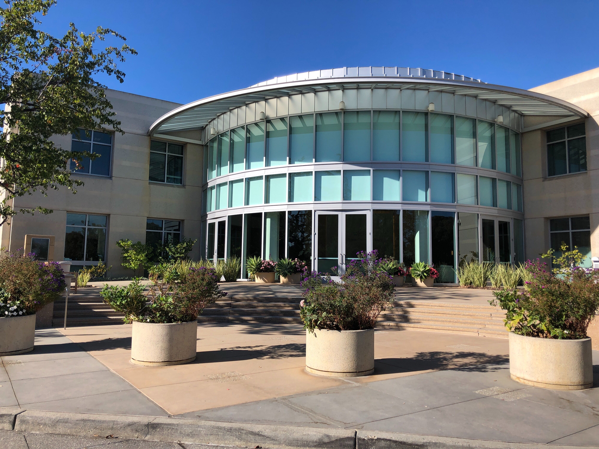
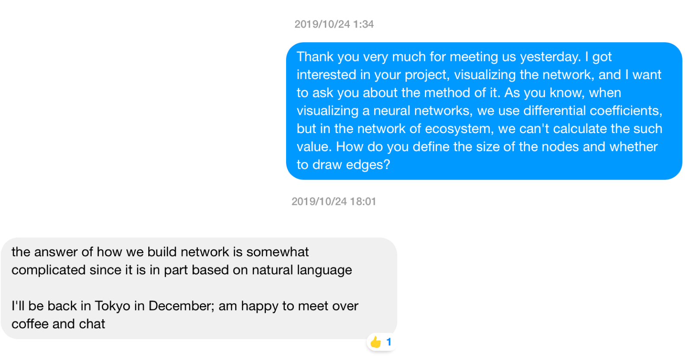
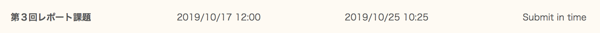

SF day.2 Everything was new and exciting!
Posted on Tue, 22 Oct 2019 in travel
2019.10.22
Forsent Health INC. (B)
Forsent Health INC. developed the SAAS platform, named "Eva, which is a voice driven, caregiver assistant that provides interaction, engagement and intervention to seniors and senior groups and supporting caregivers and families to deliver the best possible care. It also significantly reduces the cost of care while improving the lives of the people it serves.
I couldn't understand the core difference between Google Home, or Amazon Echo and Eva, but some people reports that Eva really calms down the patients, and reduces the stress level for these working with patients with dementia.

We met at the Wilson Sonsini Goodrich & Rosati (WSGR), which is one of the most famous law offices in SV.
Stanford MediaX (C)
This was a first time for me to visit Stanford University. I felt the students in there are very sophisticated, and stand alone, so it should be very stimulating, and wonderful experience for me to get a Master or Doctor at here.
In the meeting, we explained the strategies and strengths of our companies, and one startup company in the MediaX pitched. They tried to visualize the network of ecosystem using deep learning techniques. I'm interested in the method and wanted to know deeply, so sent a message to one of the members.

I'm looking forward to meeting him again :) The reason why he said "back in Tokyo" is he studied at Tokyo Institute of Technology!!
SOSV(HAX + Indiebio) (D)
HAX Boost and Indiebio are located in the same building, which is a shared co-working space run by SOSV. As you can see at here, there are too many ventures. One of them is Memphis Meats, whose mission is to "bring delicious and healthy meat to your table by harvesting it from cells instead of animals." It is one of the exciting academic fields in Japan. My housemate also interests in that.
新井恵理那さんが自宅に取材にきて、今朝のグッドモーニングに出ましたー！
— Naoto Yamaguchi (@nafoto_z) November 15, 2019
🤩🤩 https://t.co/LUAWh0vMWv
I wished I could do the internship in here while summer vacations.
Terreno Realty Corporation (E)
Terreno Realty Corporation is a San Francisco-based public real estate investment trust acquires, owns and operates industrial real estate in six major U.S. coastal markets: Los Angeles, Northern New Jersey/New York City, San Francisco Bay Area, Seattle, Miami, and Washington, D.C. They acquire functional, flexible properties in infill locations near major population centers and transportation infrastructure.
The reason why we went there is to ask the president of the company to become an LP investor.
Blue Bear Ventures (F)
Blue Bear Ventures is a VC from UC Barkley's CITRUS Foundry. The engages founders working on the frontiers of science and technology with the ambition to solve the most pressing challenges we face in the world today by using Deep Software, Robotics, Gene Therapy, and so on.
The investment them is very close to us, so I hope we will keep in touch with them.
Dinner (G)
We had a dinner with Japanese who stays at SV and works for ITOCHU. We shared the information and exchanged the opinion and strategies.
Back to Home
Whoops!! I forgot to submit the homework. As the lecture was uploaded on the internet, I could read the slides and understand what was going on in the lecture. Finally, I could submitted it within the deadline. Relief. Good night.
